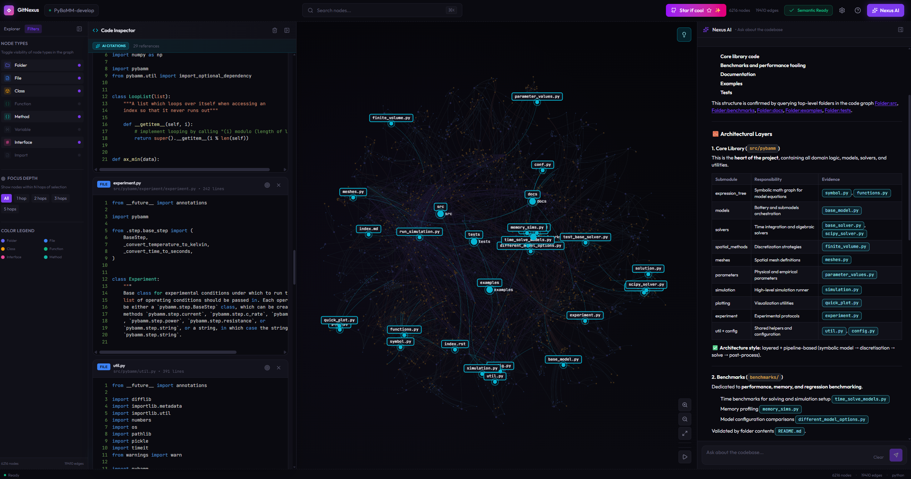
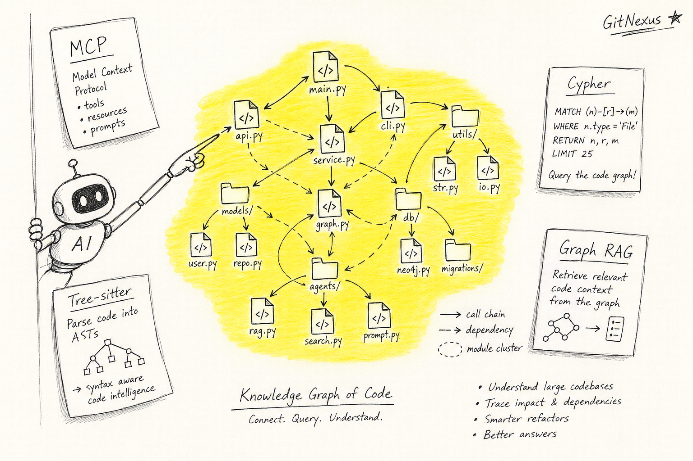
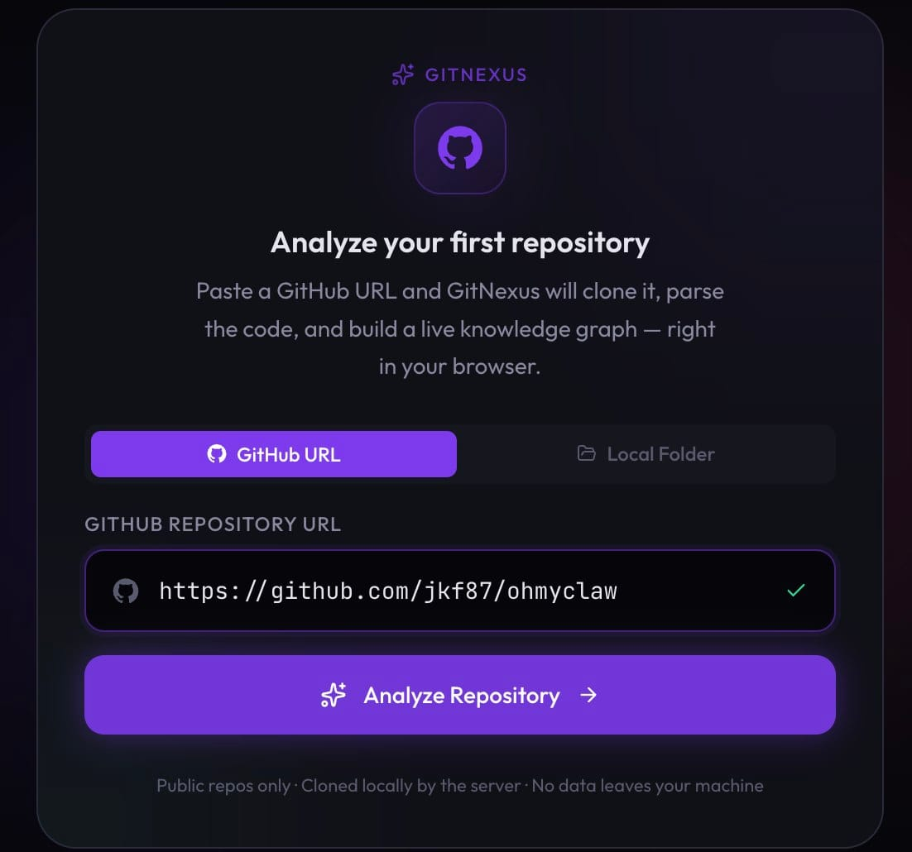
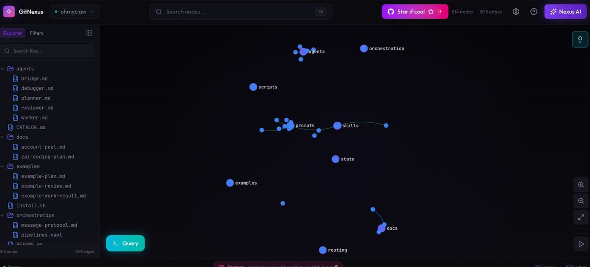
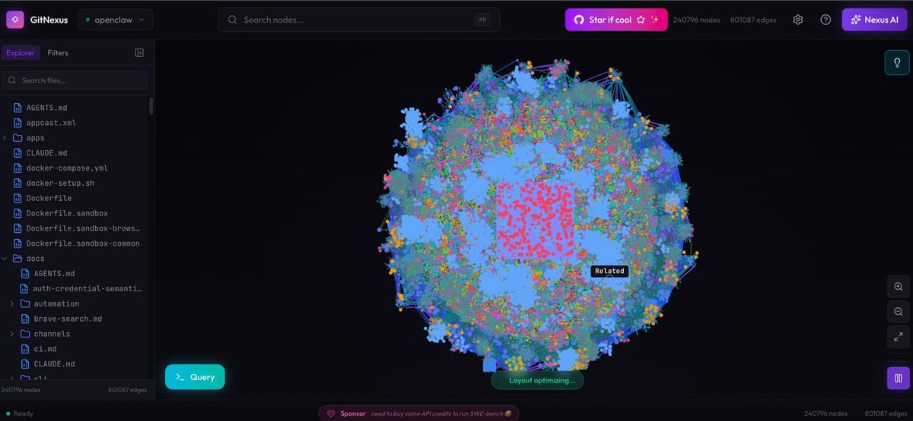

요즘 Cursor, Claude Code, Codex 같은 코딩 에이전트로 일하다 보면 비슷한 좌절을 만남. 작은 함수 하나 고치라고 시켰는데 그게 다른 파일의 콜체인을 깨버리는 일임. 잘 만든 모델이라도 그럼.

-
이유는 단순함. 에이전트는 보통 grep + 임베딩 RAG로 코드를 읽음. 텍스트 유사도라서 비슷한 문자열은 잘 찾는데, “이 함수 고치면 어디까지 영향 가는지”는 못 봄. 콜체인, 의존성, 클러스터 같은 관계 정보가 없음.
-
기존 대안으로 DeepWiki 같은 “AI 코드 위키”가 있었음. 근데 그건 코드를 설명해주는 도구임. 사람이 읽고 이해하는 용도지, 에이전트가 작업할 때 자동으로 참조하는 구조는 아님.
-
GitNexus는 다른 접근을 함. 레포 전체를 통째로 knowledge graph로 색인함. 파일, 함수, 클래스, 호출 관계, 의존성, 실행 흐름까지 노드와 엣지로 만듦. 그걸 MCP 서버로 띄워서 에이전트가 직접 쿼리하게 함.
-
결과적으로 같은 모델이라도 더 정확하게 일함. 작은 모델조차 “이 변경의 영향 범위”를 그래프에서 바로 가져올 수 있어서, 전체 콜체인을 짚으면서 수정함. README 자체가 “even smaller models get full architectural clarity”라고 표현함.

-
결국 GitNexus가 깔아주는 건 두 층임. 첫째는 안전망 층임. “이거 건드리면 어디 깨짐?”을 변경 전에 보여줌(
impact,detect_changes). 둘째는 컨텍스트 보강 층임. “이 함수 주변에 뭐가 더 있나”를 검색 시점에 같이 던져줌(query,context). 그래프 자체가 본체가 아니라, 에이전트가 검색·수정·리네임할 때 그 그래프를 자동으로 쳐다보게 만드는 파이프라인이 본체임. -
사용법은 두 갈래임. 하나는 Web UI. gitnexus.vercel.app에 ZIP이나 GitHub 레포 던지면 브라우저 안에서 그래프와 챗봇이 뜸. Tree-sitter WASM과 LadybugDB WASM으로 전부 클라이언트에서 돌아서 코드가 서버로 안 나감. 데모용으로는 깔끔함.
-
다른 하나는 CLI + MCP. 이쪽이 본체임.
npx gitnexus analyze한 줄로 색인 + 스킬 설치 + Claude Code 훅 등록 + AGENTS.md/CLAUDE.md 컨텍스트 파일 생성을 동시에 해줌. 그다음npx gitnexus setup으로 Cursor/Claude Code/Codex/Windsurf/OpenCode MCP 등록을 한 번에 끝냄. -
에이전트가 받는 도구는 16개임. 핵심은 5개 정도임.
query(BM25 + 임베딩 + RRF 하이브리드 검색),context(심볼 360도 뷰),impact(변경 영향 반경),detect_changes(git diff → 영향받는 프로세스),rename(다중 파일 일관 변경). 이름만 봐도 “에이전트가 평소에 헤매는 지점”을 노린 게 보임. -
더 흥미로운 건 Claude Code 통합임. 보통 MCP는 “도구 등록만 해두면 모델이 알아서 호출”하는 1단계 구조인데, GitNexus는 5중 안전장치를 깖. (1) MCP 도구 16개로 모델이 직접 그래프를 쿼리함. (2) PreToolUse 훅이 Grep/Glob 같은 검색 직전에 시스템 차원에서 강제로 그래프 컨텍스트를 끼워 넣음. 모델이 까먹어도 자동으로 보여주는 구조임. (3) PostToolUse 훅이 커밋 직후 색인 stale을 감지해 재색인을 유도함. (4) 에이전트 스킬 4개(Exploring/Debugging/Impact Analysis/Refactoring)가
.claude/skills/에 자동 설치돼서, Claude Code가 상황에 맞게 자동 활성화함. (5)npx gitnexus analyze한 방으로 사용법이 AGENTS.md/CLAUDE.md에 자동으로 박힘. 새 세션 시작할 때 모델이 자동으로 읽음. -
비유하면 일반 MCP는 신입한테 “막히면 위키 읽어” 한마디 던지는 거고, GitNexus는 신입이 키보드 두드릴 때마다 위키 해당 페이지가 옆에 자동으로 뜨는 거임. 그래서 클로드코드한테 한번 물려두면 따로 명령 안 해도 알아서 씀. README가 “Claude Code gets the deepest integration”이라고 따로 강조하는 이유가 이거임.
-
그래프 저장은 LadybugDB라는 임베디드 그래프 DB를 씀. CLI에선 네이티브, 웹에선 WASM. 색인은
.gitnexus/폴더로 레포 안에 들어가고, 전역 레지스트리(~/.gitnexus/registry.json)는 어떤 레포가 어디 색인됐는지만 가리킴. MCP 서버는 그 레지스트리를 읽어서 여러 레포를 한 번에 서빙함. 에이전트가repo파라미터로 골라 쓰면 됨. -
여기서 잠깐 용어 정리. Tree-sitter는 GitHub가 만든 점진적(incremental) 파서임. 코드를 읽어서 함수, 클래스, 호출 같은 구조를 추상구문트리(AST)로 뽑아냄. C로 짜여 있어 빠르고, 파서가 언어별로 분리돼 있어서 새 언어 붙이기 쉬움. 끝에 붙는 WASM은 WebAssembly의 약자임. C/C++/Rust 같은 저수준 언어를 컴파일해서 브라우저에서 네이티브에 가까운 속도로 돌리는 표준 바이너리 포맷이고, W3C 표준이라 주요 브라우저가 다 지원함. Tree-sitter WASM은 그 C 파서를 WebAssembly로 빌드한 버전이라, GitNexus 웹 UI가 코드를 서버로 안 보내고 브라우저 안에서 바로 파싱하는 게 가능함.
-
LadybugDB는 임베디드 그래프 DB임. SQLite 같은 단일 파일 DB인데 데이터 모델이 노드와 엣지임. 별도 서버 안 띄우고 라이브러리로 임포트해서 씀. WASM 빌드도 있어서 브라우저 안에서 인-메모리로 돌릴 수 있음. CLI에선 네이티브 바이너리로 디스크에 영속, 웹에선 WASM으로 세션 동안만 메모리에 뜬다고 보면 됨.
-
그래프 DB 얘기 나온 김에 두 가지 모델을 짚고 가야 함. RDF(Resource Description Framework)와 LPG(Labeled Property Graph)임. RDF는 W3C 시멘틱 웹 진영에서 나옴. 모든 데이터를 “주어-술어-목적어” 트리플로 표현함. 노드와 엣지가 전부 URI라서 외부 어휘(스키마)랑 잘 섞임. 학술/생명과학/지식그래프 표준에서 강함.
-
LPG는 Neo4j가 대중화한 모델임. 노드와 엣지에 라벨을 붙이고, 둘 다 키-값 속성을 들고 있을 수 있음. 모델이 단순하고 직관적이라 개발자가 쓰기 편함. 코드 그래프처럼 “함수 노드에 시그니처/시작줄/끝줄 같은 속성을 주렁주렁 다는” 도메인엔 LPG가 자연스러움.
-
쿼리 언어도 두 갈래로 갈림. SPARQL은 RDF용 표준 쿼리어임. SQL과 비슷한 감각인데 트리플 패턴 매칭이 핵심임(
?s ?p ?o같은). Cypher는 Neo4j가 만든 LPG용 쿼리어임. ASCII 아트로 노드와 엣지를 그리듯 쓰는 문법이 특징임((a:Func)-[:CALLS]->(b:Func)). 지금은 openCypher / GQL(ISO 표준)로 흘러가서 Neo4j 밖에서도 점점 표준이 되는 중임. -
GitNexus는 LPG + Cypher 라인을 탐. LadybugDB가 LPG 모델이고, MCP 도구 중 하나가 그냥
cypher임. 에이전트가 직접 Cypher를 던질 수 있음. 코드 그래프는 노드 종류가 많지 않고(파일/함수/클래스 정도) 속성이 많은(시그니처/줄번호/언어 등) 도메인이라 이 선택이 자연스러움. RDF + SPARQL 조합이었으면 같은 의미를 트리플로 풀어야 해서 색인 크기와 쿼리 길이가 둘 다 늘어났을 거임. -
멀티 레포 그룹 기능도 있음.
gitnexus group create로 마이크로서비스 묶음을 정의하고group sync로 레포 간 컨트랙트(API 콜, 메시지 큐 같은 것)를 추출해서 매칭함. 그러면 “프론트의 이 호출이 백엔드 어느 핸들러로 가는지”를 그래프에서 직접 따라갈 수 있음. -
직접 한번 돌려봄.
npx gitnexus@latest serve만 치면 로컬 서버가 뜨고, 브라우저로 들어가면 첫 화면이 이렇게 깔끔하게 받아줌. GitHub URL 탭에 분석하고 싶은 레포 주소 붙여넣고Analyze Repository누르면 끝. 데이터는 다 로컬에 머문다고 친절하게 적혀 있음(Public repos only · Cloned locally · No data leaves your machine).

- 작은 레포부터 시험. 직접 만든 ohmyclaw 레포(에이전트/도큐멘트 정도만 들어 있는 가벼운 저장소)를 넣어보니 514 노드 / 503 엣지짜리 그래프가 금방 떴음. 좌측 익스플로러에
agents/,docs/,examples/,orchestration/폴더 트리가 그대로 보이고, 그래프에서는 prompts와 skills가 중앙에 모여 있고 docs/state/routing 같은 작은 클러스터가 가장자리에 흩어져 있음. 이 정도 규모는 인간이 한눈에 구조를 파악할 수 있음.

- 큰 레포는 이야기가 다름. openclaw(메인 레포) 넣었더니 240,796 노드 / 801,087 엣지가 나오면서 화면이 핑크-블루 폭발 상태가 됨. 좌측 트리도
docs/,apps/같은 폴더 안쪽이 빽빽하게 차 있고 하단에Layout optimizing...이 한참 도는 중이었음. 가운데에Sponsor: need to buy some API credits to run SWE-bench토스트까지 뜨는 걸 보면 임베딩/AI 호출 비용이 만만치 않다는 것도 같이 알게 됨. 큰 레포에 무턱대고 돌리면 매우 느려지고 자원도 많이 먹으니--skip-embeddings나 작은 서브폴더부터 시작하는 게 안전함.

-
라이선스는 PolyForm Noncommercial임. 개인 학습/사이드 프로젝트는 자유, 회사에서 매출 일으키는 용도면 별도 상용 라이선스가 필요함. 엔터프라이즈는 akonlabs.com에서 SaaS와 셀프호스트로 팔고, PR 자동 영향 분석, 자동 갱신 위키, 멀티레포, OCaml 지원 같은 게 추가됨.
-
한계도 분명함. 첫째, 색인 시간이 큰 레포에서는 꽤 걸림. 임베딩 빼고 빠르게 돌리는
--skip-embeddings옵션이 있는 이유임. 둘째, Tree-sitter 기반이라 지원 언어 밖이면 그래프 품질이 떨어짐. 셋째, 코드 변경이 잦으면 stale 상태 관리가 중요함(다행히 PostToolUse 훅이 어느 정도 받쳐줌). -
그래도 의미 있는 이유는, “에이전트가 코드를 텍스트로만 본다”는 가정 자체를 깨려 한다는 점임. 같은 모델이 같은 토큰 예산으로 더 멀리 보게 만드는 가장 빠른 방법은 모델이 아니라 컨텍스트 파이프라인을 손보는 거임. GitNexus는 그 파이프라인 한 칸을 그래프로 채움.
-
정리하면, 큰 레포를 코딩 에이전트와 같이 굴리는 사람한테는 한 번 깔아볼 만함. CLI는 그냥
npx gitnexus@latest serve로 띄우고 작은 레포부터 넣어보면 됨. 결과가 별로면gitnexus clean으로 깔끔히 지우면 됨. 깃허브 별 30k가 한 달 만에 모인 데는 이유가 있는 도구임.
참고 자료
- GitHub: abhigyanpatwari/GitNexus (★ 30,232)
- Web UI: gitnexus.vercel.app
- 엔터프라이즈: akonlabs.com
- npm:
npm install -g gitnexus